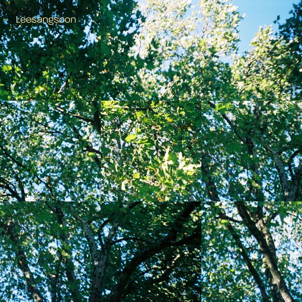

안녕하세요 라보엠입니다.
여러분에게 완벽한 좋은 하루란 어떤 하루인가요? 이상순은 이렇게 이야기하고 있습니다. 평온하고 여느 때와 다를 게 없이 시작하는 어제와 같은 하루. 이효리의 남편이자 전 롤러코스터 밴드의 기타리스트, 김동률과도 프로젝트 앨범을 내기도 했던 이상순이 새로운 곡을 발표했습니다. 평범하고 근심 없는 매일매일을 지내고 싶은 마음을 담은 노래 완벽한 하루 입니다.

완벽한 하루 - Antenna 이상순 플레이리스트
이상순의 이 플레이리스트 영상에는 일상을 그대로 보여주듯, 멍멍이와 함께 하는 일상이 그대로 그려져 있습니다. 제주에서도 그의 아내인 이효리와 함께 유기견을 입양해서 함께 지냈었죠. 저는 개인적으로 이 곡의 백미는 노래가 끝난 후 4프레이즈의 후주라고 느꼈습니다. 평범한 단어들로 평범한 일상을 완벽하게 느끼게 만드는 멋진 노래가 끝나고 나나나 흥얼거리다 기타리스트인 그의 특기인 기타 프레이즈 이어지며 특별하고 완벽한 이 곡을 마무리하고 있습니다.
이 플레이리스트에는 김동률과 함께 했던 베란다 프로젝트의 노래들과 그의 노래들, 그리고 놀면 뭐하니에서 나왔던 다시 여기 바닷가까지 그의 곡들이 채워져 있습니다.
이상순 완벽한 하루 Release Note
이상순 Digital Single [완벽한 하루]
누군가의, 또 우리 모두의, 가장 평범하고 가장 완벽한 어느 하루
싱어송라이터, 작곡가, 기타리스트, 프로듀서 등 이상순은 여러 가지 이름으로 불리고 있지만 서정적이고 섬세한 사운드로 그려내는 낭만은 그를 관통하는 키워드다. 신곡 완벽한 하루 역시 평범한 하루를 따뜻한 시선으로 담아낸 이상순표 힐링 음악으로 리스너의 일상에 평온함을 선사한다.
01 완벽한 하루
여느 때와 다를 게 없는 평범한 어느 날도 꿈같은 하루로 만드는 마법 같은 곡이다. 보편적인 단어들로 써 내려간 화자의 하루를 들여다보고 있으면 우리 모두의 일상도 아무런 근심이 없는 평화로운 하루들로 채워지길 바라는 마음이 고스란히 전해진다. 또한, 짜임새 있는 편곡과 정교한 연주로 완성된 웰메이드 사운드는 곡의 유쾌하면서도 평화로운 감성을 한층 배가시킨다.
-
Lyrics by 이상순, 박창학
Composed by 이상순
Arranged by 강화성
Drum 신석철
Bass 최훈
Guitar 이상순
Keyboards 강화성 신정은
E.piano 강화성
Percussion 신정은
MIDI Programming 신정은
BGVs AND (앤드)
Recorded by 지승남 강은구 at Studio Antenna
Digital edited by 이소윤 at Studio Antenna
AND(앤드) at Sowall studio
Mixed by 윤정오
Mastered by 황병준 장영재 at 사운드미러
이상순 완벽한 하루 가사
1.
커튼 사이로 비치는 햇살에
제일 먼저 잠에서 깨면
너를 위해서 커피를 준비하는
평온한 아침
주섬주섬 옷을 챙겨 입고서
가볍게 산책 나가려다
애타게 꼬리치는 구아나의 눈빛에
웃으며 손짓을 하네
"같이 나가자"
내가 바라고 바라던 날들
아무런 근심 없는 하루
매일매일 꼭 어제 같은 날이면 좋겠다
여느 때와 다를 게 없는 하루의 시작
2.
부서지는 햇살이 떠다니는
바닷가 작은 카페에선
너와 같이 부르던 그 노래가 흐르고
어느새 우린 또 함께 따라 부르네
내가 바라고 바라던 날들
이렇게 평화로운 하루
내일도 또 꼭 오늘 같은 날이면 좋겠다
더 이상 바랄 게 없는 완벽한 하루
너와 함께한 모든 날들이
나에겐 마치 꿈만 같아
너도 같은 마음이라면 참 좋겠단 생각에
가만히 널 바라보는 꿈같은 하루
나나나나나 나나나나나
라라난나 나나나나
나나나나나 나나나나나
라라난나 나나나나